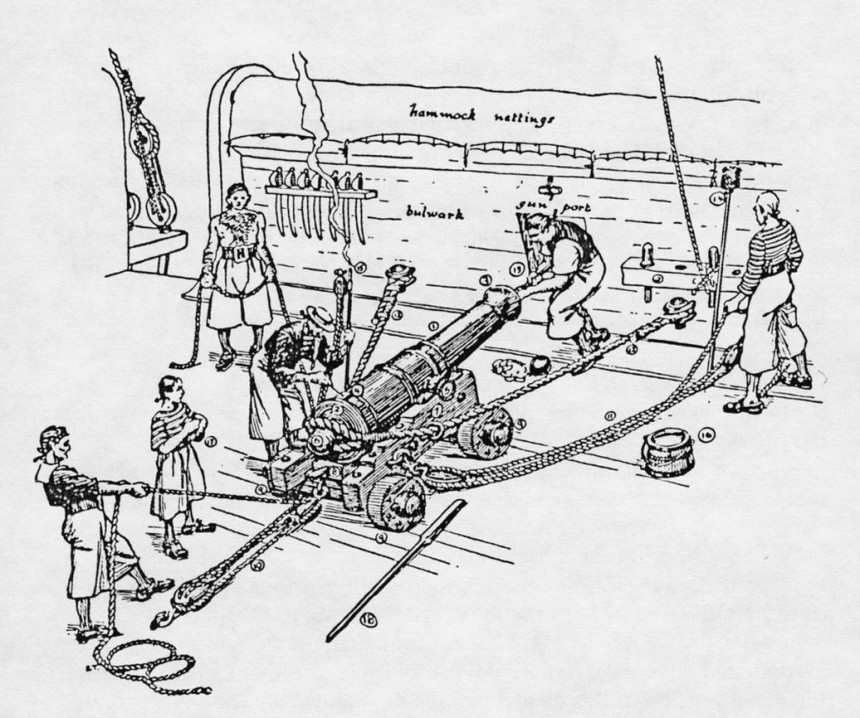
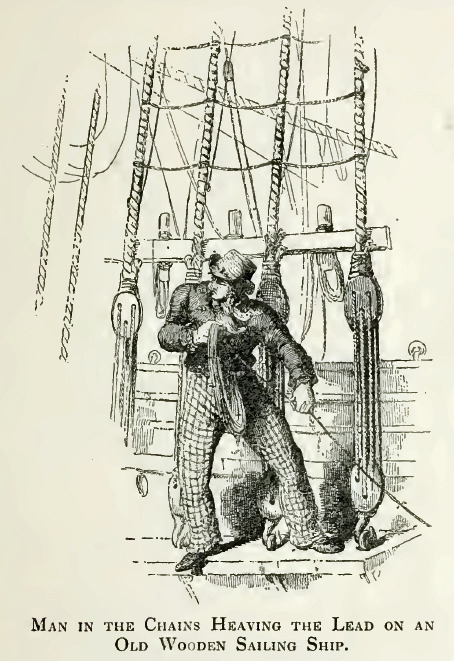

나폴레옹 시대 영국 전함의 전투 광경 - Lieutenant Hornblower 중에서 (2)
게시: 2019-02-28T06:30:00+09:00

(나폴레옹 전쟁 당시인 19세기 초 전형적인 24파운드 함포의 모습입니다. 지금 이 함포는 장전을 위해 후퇴 위치(recoil position)에 놓여 있습니다. 대포 꼬리 부분의 둥근 돌기 같은 쇳덩이가 breech(포미)이고, 거기에 걸린 밧줄이 breeching(포삭)입니다. 그 외에 그림에 10번, 11번이라고 표시된 것이 train tackle, side tacke입니다. Tackles는 원래 도르래의 밧줄을 뜻하는 것인데, 여기서는 대포를 발사 위치로 당기고 고정시키기 위한 밧줄 정도로 이해하시면 되겠습니다. 포미 부분에 붙어서 뭔가 하고 있는 남자는 대포 약실 속에 밀어넣은 장약포(powder cartridge, 흑색 화약이 캔버스 천으로 된 헝겊주머니에 담겨있습니다)에 점화구(touchhole, 또는 vent)을 통해 긴 쇠꼬쟁이를 찔러넣어 구멍을 뚫고 있습니다. 그 뒤에 점화구로 긴 갈대 등에 화약을 채워넣은 뇌관(priming tube)을 삽입할 것입니다.)
Source : http://www.navyhistory.org/the-constitution-gun-deck/
곧 화약 보이(powder boy)들이 함포의 장약(charge)을 하나씩 들고 달려왔다. 각 함포의 포삭(砲索, breeching, 대포를 고정시키기 위해 포미의 돌기에 거는 밧줄)을 벗겨냈고 함포 조원들은 포문(port)을 열고 함포를 발포 위치로 밀어내라는 명령을 기다리며 대포 견인줄(tackles) 옆에 대기했다. 부시는 양현을 재빨리 훑어 보았다. 각 함포의 조장들은 모두 제 위치에 있었다. 우현의 각 함포에는 10명씩 대기하고 있었고, 좌현 쪽에는 함포마다 5명씩이 대기했다. 이 숫자들은 24파운드 포의 최대 및 최소 운용 인원수였다. 양현의 함포들 중 어느 쪽이 포격에 동원되더라도 제대로 인원수를 갖추도록 감독하는 것이 부시의 책임이었다. 만약 양현의 함포들이 동시에 포격에 들어가야 한다면 그는 양쪽에 인원을 공평하게 배분해야 했고, 사상자들이 나오기 시작하고 일부 함포가 포격 불능 상태에 빠지면 그가 함포 조원들을 재조정해야 했다. 부사관(petty officer)들과 준위(warrant officer)들은 각자의 담당 분대의 전투 준비가 끝났다고 보고를 해오고 있었고, 부시는 전령 역할의 의무를 띠고 옆에 서있는 사관생도(midshipman)을 향해 돌아섰다.
"미스터 애봇(Abbott), 하갑판의 전투 준비가 끝났다고 보고하게. 그리고 함포를 내밀 것인지 여쭤보도록."
"예, 부관님 (Aye aye, sir.)"
잠시 전에만 해도 전함은 소음과 북적거림으로 가득했으나, 이제 선체 목판의 끼익거리는 소음을 빼면 모든 움직임이 멈췄고 조용해졌다. 전함은 파도의 리듬에 맟추어 오르내렸다. 주돛대 옆에 서있던 부시는 배의 요동에 따라 자동적으로 몸을 맞추어 균형을 잡았다. 어린 애봇이 다시 사다리를 타고 내려왔다.
"미스터 버클랜드의 전언이십니다. (Mr Buckland's compliments, sir : 원래는 버클랜드가 칭찬을 한다 라는 뜻입니다만 영국 해군에서는 거의 관용어구처럼 '누가 보낸 전언이다'라는 뜻으로 사용됩니다. 아무리 시급한 전투 상황에서도 이 관용어구를 빼먹지 않아야 한답니다. : 역주) 아직 함포를 내밀지 말라십니다."
"알겠네. (Very good : 여기서는 매우 좋다는 뜻이라기보다는 잘 알아들었다 정도의 뜻입니다. 보통 very well이라는 표현도 많이 씁니다. 가령 우리 편이 패전하고 있다는 전언을 들었을 때도 very well이라고 대답하기도 합니다. : 역주)
혼블로워는 포가 견인줄(train tackles)의 고리 볼트(ringbolt)에 맞춰 더 선미 쪽에 서있었다. 그는 애봇이 가져온 전언을 듣기 위해 돌아보았다가 이제 다시 뒤돌아섰다. 그는 양발을 벌리고 서있었는데, 그가 등 뒤에서 양손을 맞잡고 약간 꽉 쥐는 것이 부시의 눈에 들어왔다. 그의 어깨와 그가 머리를 쳐들고 있는 모습에는 뭔가 경직된 느낌이 들었는데, 그건 어떤 의미로든 해석될 수 있었다. 전투를 간절히 바라는 것일 수도 있었지만, 정반대일 수도 있었다. 함포 조장 한 명이 뭔가 혼블로워에게 말을 걸며 이야기했는데, 부시는 혼블로워가 몸을 돌려 거기에 대답하는 것을 보았다. 하갑판의 희미한 채광 속에서도 부시는 혼블로워 얼굴 표정에 긴장감이 깃들어 있고 웃는 미소는 억지로 짜낸 것이라는 것을 알아볼 수 있었다. '뭐, 글쎄, 전투 돌입 직전에 사람들은 종종 저런 모습을 보이곤 하지'라고 부시는 최대한 선심을 발휘해 스스로에게 해명을 했다.
전함은 조용히 항진을 계속 했다. 부시가 귀를 쫑끗 세운 채 상갑판에서 무슨 일이 일어나고 있는지 듣고 상황을 유추해보려 했지만 아무 소리가 나지 않았다. 저 멀리 햇치 통로를 통해 어떤 수병의 외침 소리가 희미하게 들려왔다.
"바닥이 없습니다(No bottom, sir), 이 줄로는 바닥이 닿지 않습니다."
즉 돛대고정발판(chains : 돛대를 뱃전 양쪽으로 고정시켜주는 밧줄을 shrouds라고 하는데, 그 shrouds를 뱃전에 고정시키기 위해 뱃전 너머에 설치해놓은 작은 발판을 chains라고 합니다 : 역주)에 수병이 올라가서 납덩이가 달린 밧줄을 던지며 수심을 재고 (taking casts with the lead) 있는 모양이었고, 그건 이 전함이 육지에 가까이 다가가고 있다는 뜻이었다. 하갑판에 있는 모든이들이 같은 결론을 내리고는 옆사람과 그에 대해 속삭이기 시작했다.

"거기, 조용히 해 !" 부시가 윽박질렀다.
수심측정수(leadsman)의 외침 소리가 또 한번 들리더니, 이번에는 뭔가 우렁찬 호령소리가 뒤따랐다. 곧 하갑판 전체가 소음으로 가득 찼다. 포문을 열고 주갑판의 함포들을 밀어내고 있는 것이었다. 하갑판의 밀폐된 공간에서는 모든 소리가 함체의 목판에 반사되고 증폭되었기 때문에, 함포의 포가(gun truck)가 갑판 바닥을 가로질러 발포 위치로 내밀어지는 것은 마치 천둥같은 소리가 났다. 모든이들이 부시를 쳐다보며 명령을 기다렸지만, 그는 그냥 차분히 서있었다. 명령이 오지 않았기 때문이었다. 그러더니 사관후보생 하나가 사다리를 내려와 명령을 전했다.
"미스터 버클랜드의 전갈입니다, 부관님, 함포를 발포 위치로 밀어내 주시기 바랍니다." (Mr Buckland's compliments, sir, and please to run your guns out. : 지금이야 그렇다지만 사람들이 두동강 나고 피가 쏟아지는 처절한 전투 상황에서도 저렇게 compliments니 please니 하는 미사여구를 써야 한다는 것이 좀 우습지요 ? : 역주)
그 사관후보생은 하갑판에 발을 대지도 않은 채로 사다리에서 그 메시지를 새된 소리로 외쳤고, 모든이들이 그 말을 들었다. 하갑판 전체에서 즉각 웅성거림이 일어났고, 쉽게 흥분하는 사람들은 포문을 열려고 손을 뻗기 시작했다.
"조용 !" 부시가 호통쳤다. 모든 움직임이 검연쩍게 딱 멎었다.
"포문을 열어라 !" (Up ports !)
포문이 열리면서 하갑판의 어둑어둑함이 눈부신 대낮으로 바뀌었다. 좌현 쪽에서 작은 사각형의 햇빛이 쏟아져 들어와 전함의 흔들림에 따라 넓어졌다 좁아졌다를 반복하며 갑판을 비추었다.
"밀어내라 !"